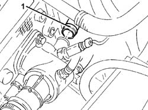
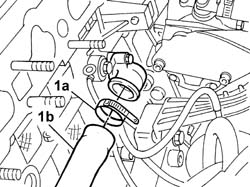

1088D38 CYLINDER HEAD/CRANKCASE WATER CIRCUIT HOSE WITH THERMOSTAT CLOSED - R.R.
- Path
- Procedures > 10 ENGINE > 1088 ENGINE COOLING > 1088D COOLANT HOSES AND PIPES > 1088D38 CYLINDER HEAD/CRANKCASE WATER CIRCUIT HOSE WITH THERMOSTAT CLOSED - R.R.
- Kind
- repair procedure (removal / refitting; the operation number is the code)
- Applies to
- engines: 2.0 TB, 2.4 20V; all production periods
- Interactive page
- https://sloeber94.github.io/elrnDB-lThss/en/#/95901
Applies to: engines: 2.0 TB, 2.4 20V; all production periods
 Removing
Removing
 Refitting
Refitting- Position the vehicle on a lift.
- Open the boot, remove the cover on the left hand side and disconnect the negative battery lead.
See in Op. 7040D50 ENGINE COMPARTMENT UPPER SOUND INSULATION SHIELD - R.R.
Applies to: engines: 2.4 20V; all production periods
See in Op. 7055B54 PROTECTION/GUARD under engine - R.R.
See in Op. 1016A40 Ignition COIL COVER on cylinder head - R.R.
See in Op. 1048A28 vacuum air circuit resonator pipe - r+r
See in Op. 1048A48 HOSE BETWEEN RESONATOR AND THROTTLE CASING - R.R.
See in Op. 1056B82 Injection/ignition system CONTROL UNIT (one) - R.R.
See in Op. 1056B14 THROTTLE CASING - R.R.
See in Op. 1056B87 INJECTION/IGNITION CONTROL UNIT MOUNTING - R.R.
See in Op. 1072B10 INTAKE MANIFOLD - R.R. and Replace gasket
See in Op. 1072D50 DEVICE (V.I.S.) with adjustable air ducts - R.R.
Applies to: engines: 2.0 TB; all production periods
See in Op. 7055B54 PROTECTION/GUARD under engine - R.R.
See in Op. 1080D24 engine oil vapour intake pipe - r + r
See in Op. 1016A40 Ignition COIL COVER on cylinder head - R.R.
See in Op. 1048A50 air inlet pipe to turbocharger - r + r
See in Op. 1084A16 Engine oil dip stick PIPE - R.R.
See in Op. 1072B10 INTAKE MANIFOLD - R.R. and Replace gasket
Applies to: engines: 2.0 TB, 2.4 20V; all production periods
1. Disconnect the cylinder head/crankcase water circuit with closed thermostat hose from the thermostat.

Applies to: engines: 2.0 TB, 2.4 20V; all production periods
1. Disconnect the band (1a) and remove the hose (1b) for the cylinder head/crankcase water circuit with closed thermostat.

Applies to: engines: 2.0 TB, 2.4 20V; all production periods
Refitting
Removing- Position the hose for the cylinder head/crankcase water circuit with closed thermostat and secure it to the connector on the crankcase using the band.
- Connect the cylinder head/crankcase water circuit with closed thermostat hose to the thermostat.
Applies to: engines: 2.4 20V; all production periods
See in Op. 1072D50 DEVICE (V.I.S.) with adjustable air ducts - R.R.
See in Op. 1072B10 INTAKE MANIFOLD - R.R. and Replace gasket
See in Op. 1056B87 INJECTION/IGNITION CONTROL UNIT MOUNTING - R.R.
See in Op. 1056B14 THROTTLE CASING - R.R.
See in Op. 1056B82 Injection/ignition system CONTROL UNIT (one) - R.R.
See in Op. 1048A48 HOSE BETWEEN RESONATOR AND THROTTLE CASING - R.R.
See in Op. 1048A28 vacuum air circuit resonator pipe - r+r
See in Op. 1016A40 Ignition COIL COVER on cylinder head - R.R.
See in Op. 0010T21 ENGINE COOLANT - Check density and top up if necessary
Applies to: engines: 2.0 TB; all production periods
See in Op. 1072B10 INTAKE MANIFOLD - R.R. and Replace gasket
See in Op. 1084A16 Engine oil dip stick PIPE - R.R.
See in Op. 1048A50 air inlet pipe to turbocharger - r + r
See in Op. 1016A40 Ignition COIL COVER on cylinder head - R.R.
Applies to: engines: 2.0 TB, 2.4 20V; all production periods
See in Op. 7040D50 ENGINE COMPARTMENT UPPER SOUND INSULATION SHIELD - R.R.
- Connect the negative battery terminal, then close the boot.
- Remove the vehicle from the lift.
Topics linked from this page (14)
- 0010T21 ENGINE COOLANT - Check density and top up if necessary
- 1016A40 Ignition COIL COVER on cylinder head - R.R.
- 1048A28 vacuum air circuit resonator pipe - r+r
- 1048A48 HOSE BETWEEN RESONATOR AND THROTTLE CASING - R.R.
- 1048A50 air inlet pipe to turbocharger - r + r
- 1056B14 THROTTLE CASING - R.R.
- 1056B82 Injection/ignition system CONTROL UNIT (one) - R.R.
- 1056B87 INJECTION/IGNITION CONTROL UNIT MOUNTING - R.R.
- 1072B10 INTAKE MANIFOLD - R.R. and Replace gasket
- 1072D50 DEVICE (V.I.S.) with adjustable air ducts - R.R.
- 1080D24 engine oil vapour intake pipe - r + r
- 1084A16 Engine oil dip stick PIPE - R.R.
- 7040D50 ENGINE COMPARTMENT UPPER SOUND INSULATION SHIELD - R.R.
- 7055B54 PROTECTION/GUARD under engine - R.R.